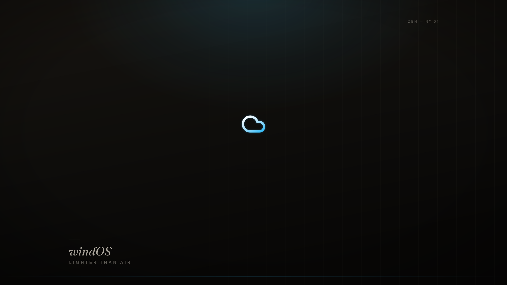
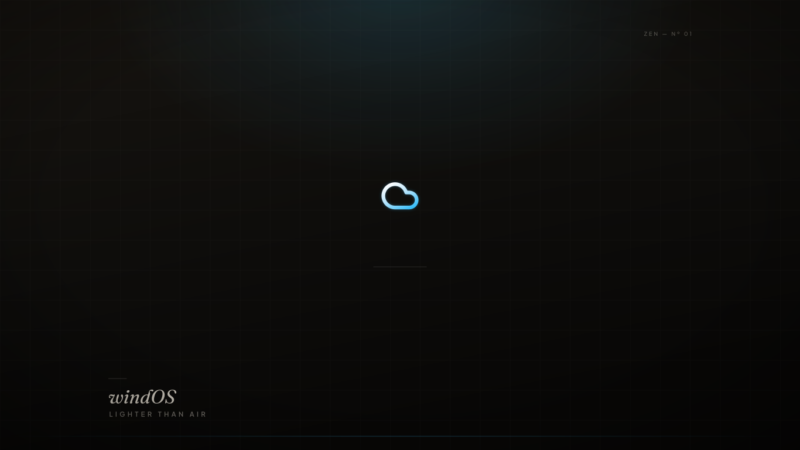
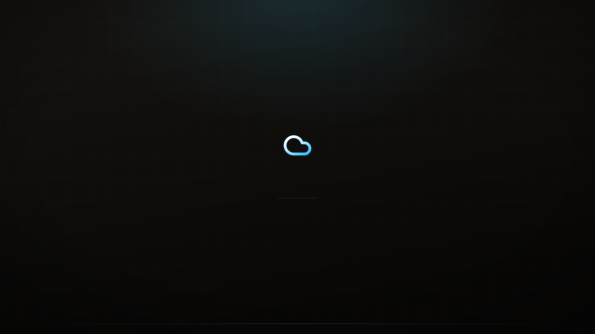
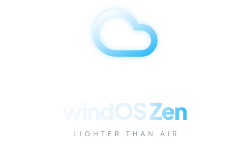
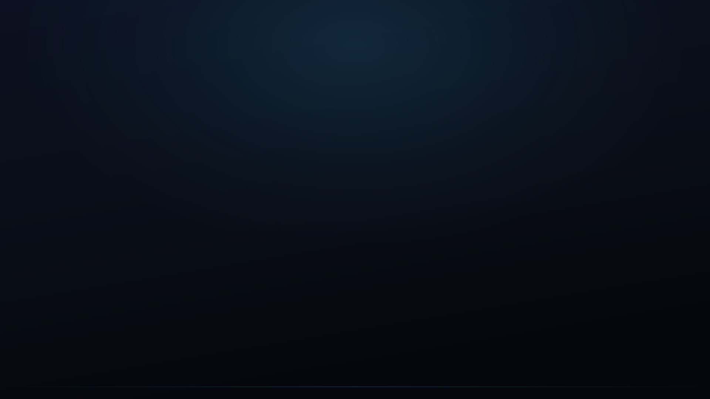
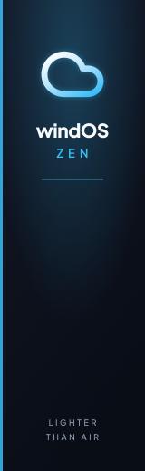

windOS Zen Brand Gallery
Everything the designer made — logos, wallpapers, boot splash, installer art, icons, ASCII. ← back to site
1 · Canonical logo
windos-logo.svg / windos-cloud.svg (masters)
Renders — 1024 / 256
2 · Wallpapers
1920×1080

1366×768

Editorial variant (warm black, hairline grid)

3 · Plymouth boot splash
Lockup 512×300

Background 1920×1080

Spinner frames (00/06/12/18 of 24)
4 · Calamares installer art
Banner
Sidebar

5 · Icons (16 → 256 + scalable)
favicon.ico ships in site root (this page's tab icon).
6 · ASCII suite
logo-ascii.txt — narrow / medium / wide + fallbacks
windOS Zen — logo ASCII (generated from assets/generated/icons/256x256/windos.png on #090d16, image-to-ascii)
Ramp: ' .:-=+*#%@'. Monospace only, dark terminals.
--- NARROW (24ch) ---
.-==-:
.+%%#***##*:
=@#- :+%+.
-@* -#***+-
*%: .-**.
-@* .#=
=%*: =*:
.=**+===========++:
.::-:::::::::.
--- MEDIUM (48ch) ---
.-=++***+=-:.
.-*%@@@@@@@@@@@@%#+:
.+%@@@%#+=-::--=*#%@%%#-
=%@%@*-. :+#%%%*.
*@%%%- +%#%#:
+@%%#. -%###****+=-.
.%%%%. =###########+:
-%%%* ......:=*#*#+
-%%%* .=***+
.%%%%. +***-
=%#%#. -*+*=
+%###: +*+*:
-####+-. :+++*=
.=*###*+=-:::::::::::::::::::::-=*+++-
-+*#############**************+=-.
.:--===================---:.
--- WIDE (72ch) ---
:=+*#%%%%%%%%##*+-:
:=*%@@@@@%%%%%%%%%%%@@%#*=.
.=#@@@%%%@@@%%%%%%%%%%%%%%%%%%*-
.+%@@%%%@@#*=-:. ..:-=*#%%%#%%%#=
-%@%%%@@#+: :+#%%##%%#:
*@%%%%@#- -#%###%%=
*@%%%%%= +%####%+
*@%%%%%: -%######*****+=-:
-@%%%%%: -%##############*+-.
*%%%%%+ =#############**##*=.
.%%%%%%: ........:-=*##***#*-
.%%%%%%. :+#****#=
.%%%%%%: -******-
*%%%#%+ -******.
-%#%##%: +*****:
+%#####: +***+*:
*%#####= :*++++*.
+%####%*: .+++++*=
-#%#####*=: .-*++++*=
.=####*###*+-:.. ..-=+*+++++-
.-*###***####**************+++++++++++++++++**++++++=:
.-+*###**************************++++++++++++++-.
.-==+******************+++++++++++++++=-:.